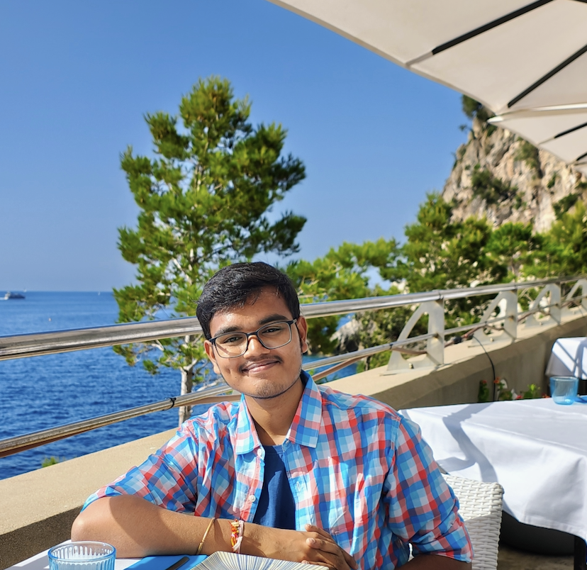
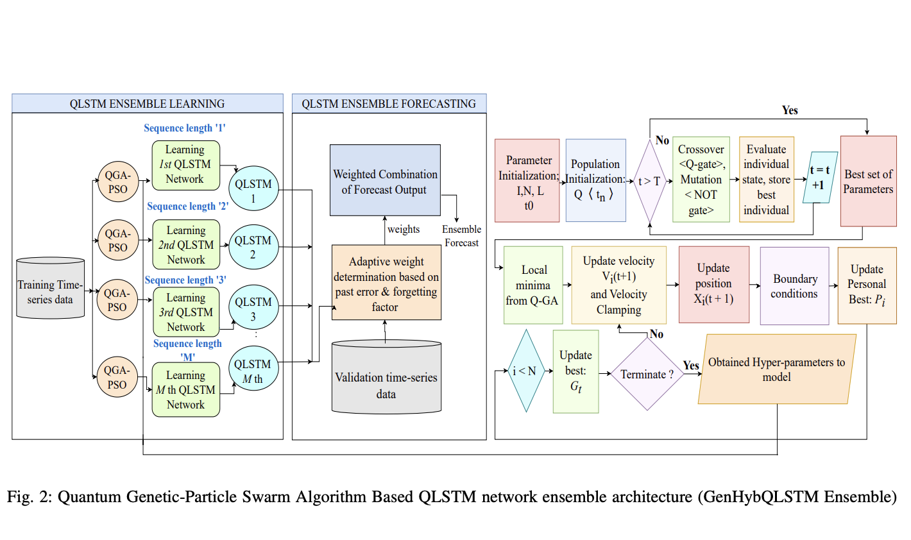
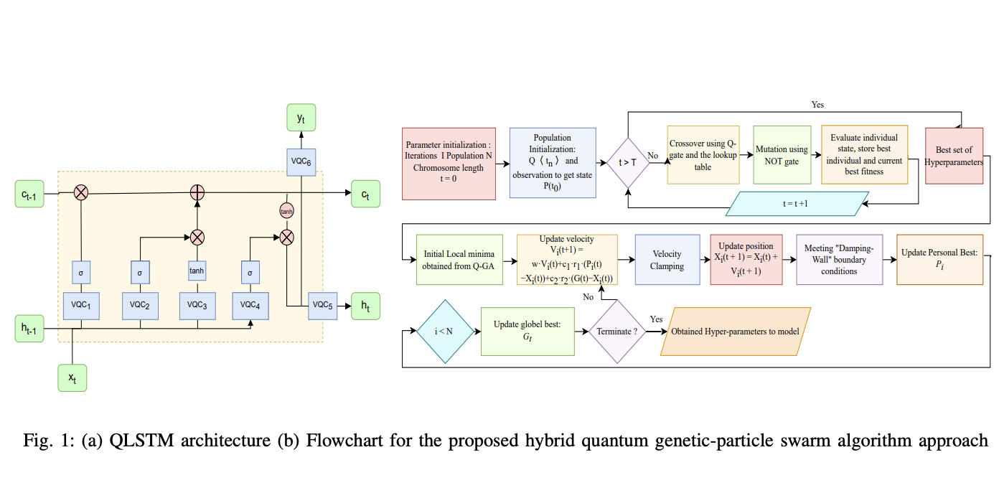
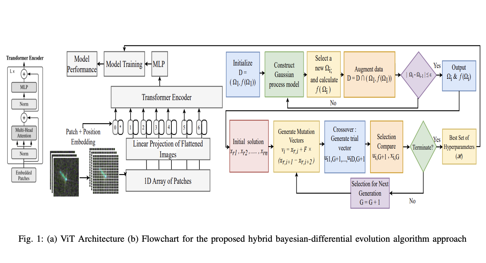

|
Sripadam Sujith Sai I am Sripadam Sujith Sai, a recent Chemical Engineering graduate (Class of 2025) from NIT Rourkela, with an exchange term at IIT Hyderabad. My research interests lie at the intersection of AI+Science and Geometric deep learning, with practical experience in computer vision, deep learning, and human–robot interaction fields I am equally passionate about. I’ve had the opportunity to work with:
Earlier, I worked on developing machine learning models for CO₂ capture and conversion. Outside research, I enjoy playing badminton and brainstorming on creative technology applications (a few ideas are born from this). |

|
Achievements
|
Publications and Preprints |
||
|  |
QGAPHEnsemble: Combining Hybrid QLSTM Network Ensemble via Adaptive Weighting for Short Term Weather Forecasting.
Sen, A. et al. (2025). A Survey of Hyperparameter Selection Methods for Weather Forecasting Using State-of-the-Art Machine Learning Algorithms. In: Bäck, T., et al. Computational Intelligence. IJCCI 2023. Studies in Computational Intelligence, vol 1196. Springer, Cham. https://doi.org/10.1007/978-3-031-85252-7_15 IJCCI 2023 arXiv | Springer Nature |
|
|  |
QGAPHnet: Quantum Genetic Algorithm Based Hybrid QLSTM Model for Soil Moisture Estimation.
S. Sai et al., "QGAPHnet : Quantum Genetic Algorithm Based Hybrid QLSTM Model for Soil Moisture Estimation," IGARSS 2024 - 2024 IEEE International Geoscience and Remote Sensing Symposium, Athens, Greece, 2024, pp. 5191-5194, doi: 10.1109/IGARSS53475.2024.10641651. IEEE IGARSS 2024 arXiv | IEEE Xplore |
|
|  |
HBO-DEViT: Vision Transformer Based Attention-Guided Evolutionary Architecture for Ship-Iceberg Categorisation in Arctic SAR Images.
A. Sen, S. Sai, C. Mallick, S. Roy and U. Sen, "HBO-DEViT: Vision Transformer Based Attention-Guided Evolutionary Architecture for Ship-Iceberg Categorisation in Arctic Sar Images," IGARSS 2024 - 2024 IEEE International Geoscience and Remote Sensing Symposium, Athens, Greece, 2024, pp. 201-204, doi: 10.1109/IGARSS53475.2024.10641319. IEEE IGARSS 2024 arXiv | IEEE Xplore |
|
Projects |
||
|
ChesSAI : A Hybrid Reinforcement Learning-Based Self-Evolving Chess Engine
A chess engine combining PPO and MCTS, trained via self-play, imitation learning, and dynamic ELO-based curriculum. GitHub |
||